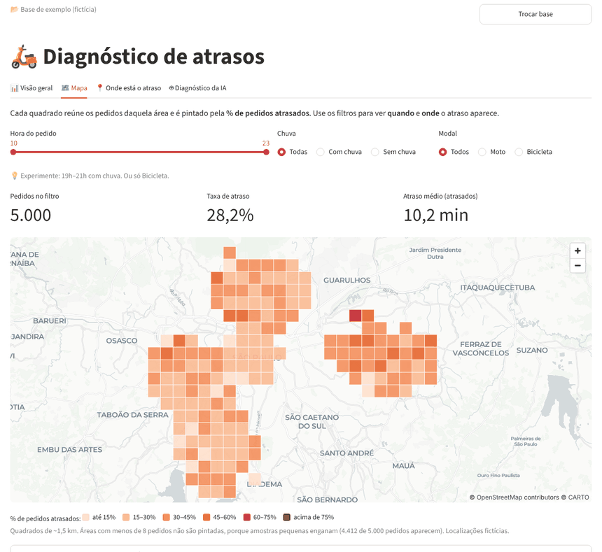

Agente de Análise de Atrasos em Entregas
Um gestor de operações envia a base de entregas e vê onde os atrasos se concentram, por que acontecem e o que fazer. O app tem um mapa de São Paulo com filtros de hora, chuva e modal, e um diagnóstico escrito por IA.
- Python
- pandas
- Streamlit
- pydeck
- Gemini API
Os dados são fictícios.